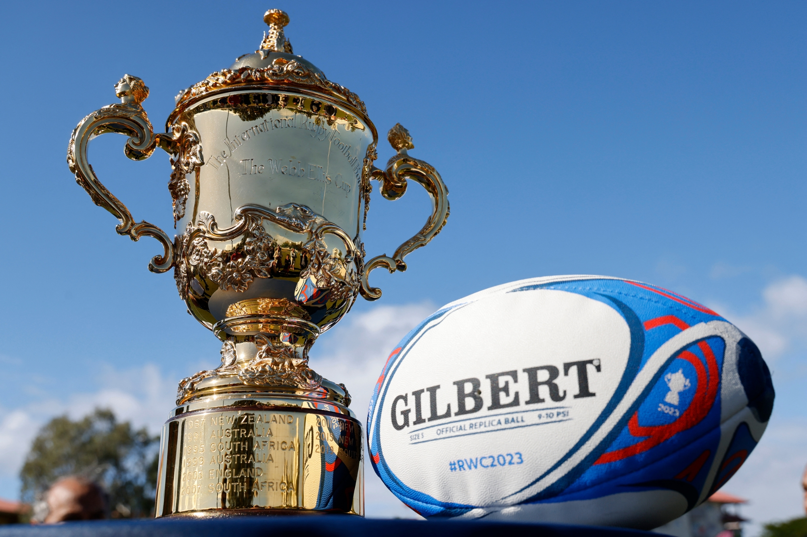
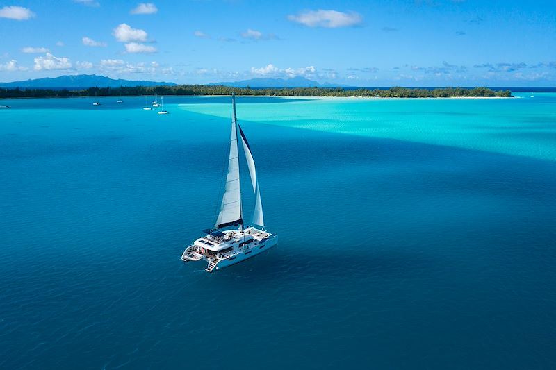

Informatique — projets Informatique et codage Aéronautique — modélisme et Réalisation de projets Innovants Intelligence Artificielle — Prompt Engenerring, Comment intégrer IA dans un projet Sport — activité physique et équipe

Le Rugby — Les valeurs transmise dans ce sport Photographie — capturer des moments mémorables

Navigation — Parcourir les mers, les océans Voyager — Passionnée par les cultures étrangères Débutant en Aphorismes — Ecrire et faire des citations sur quelque chose (texte, film...) Geopolitique — Étude des effets de la géographie sur la politique internationale et les relations internationales